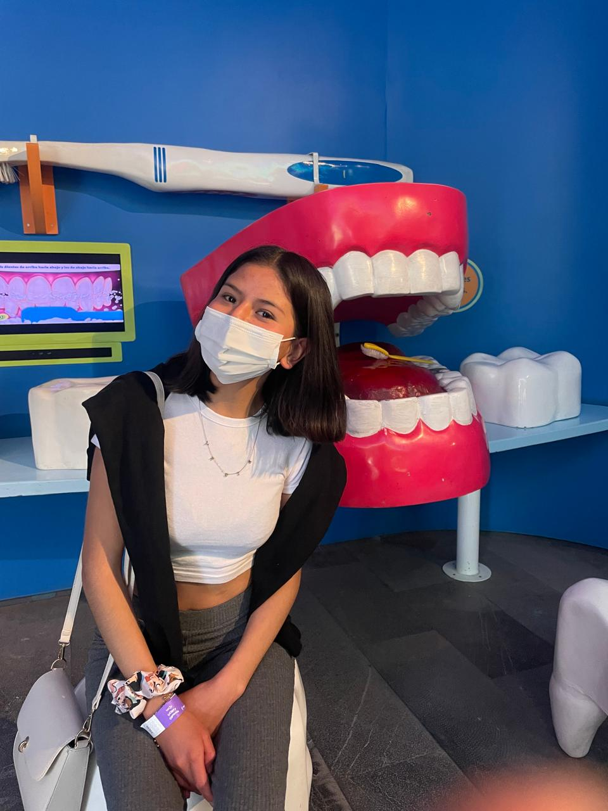

Vania S. Mendoza G.
Cirujano Dentista
Egresada de la Universidad Autónoma del Estado de México, actualmente especializándome en odontopediatría. Puedo llevar a cabo consultas en general, puentes, placas totales, extracción de dientes, limpiezas y blanqueamientos, al igual que en niños.
